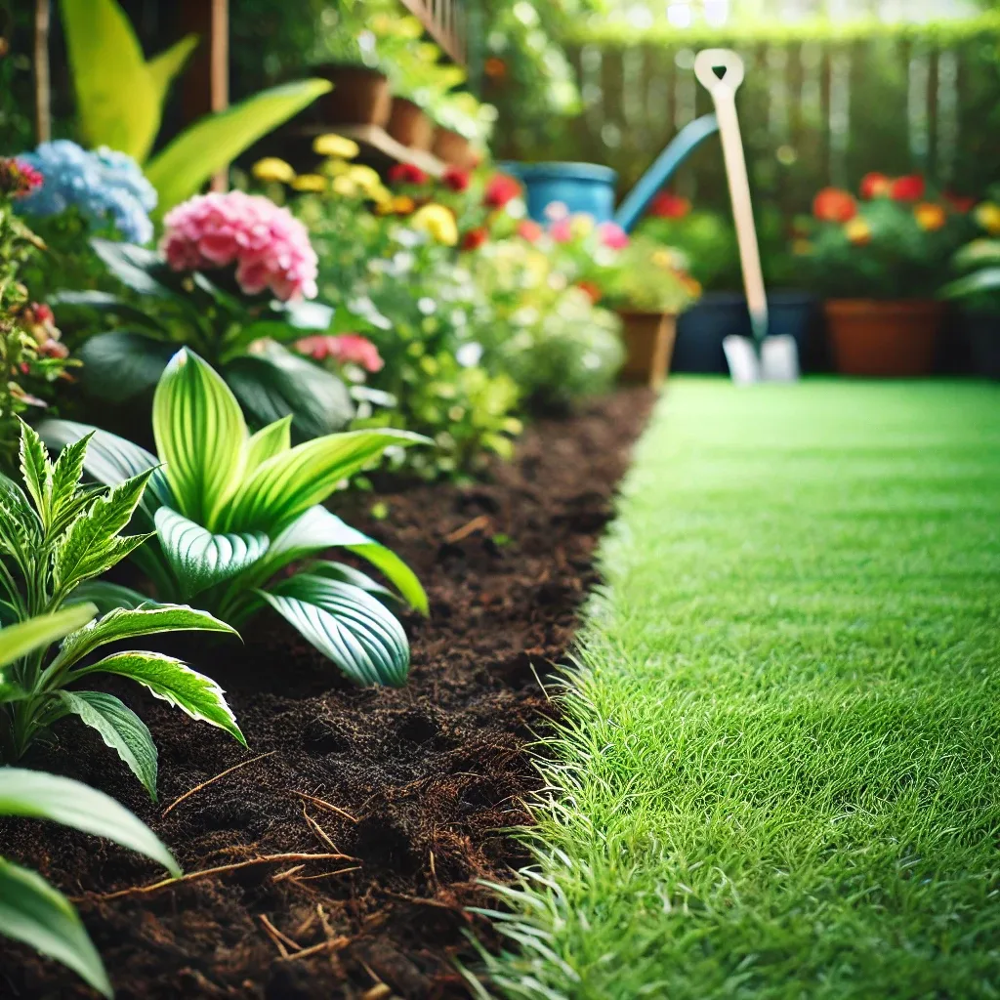

Pourquoi choisir notre méthode de désherbage à Paris ?
- Techniques manuelles : Arrachage racinaire pour un résultat durable
- Désherbage thermique : Solution écologique pour les allées et terrasses
- Prévention naturelle : Paillage organique pour limiter la repousse
Zones d'intervention à Paris
Nous couvrons tous les arrondissements, avec une expertise particulière pour :
- Les jardins historiques (Louvre, Marais)
- Les cours d'immeubles (16e, 8e arrondissements)
Transformez votre Jardin : Avant et Après
Découvrez l'impact de notre service de désherbage sur l'apparence de votre jardin. Un jardin propre, sans mauvaises herbes, c'est un espace agréable à vivre.
Avant Désherbage

Après Désherbage
>
🌱 Devis Gratuit pour le Désherbage à Paris